دکتر مسعود گوهری منش
دانشیار گروه مهندسی مکانیک — دانشگاه تربت حیدریه
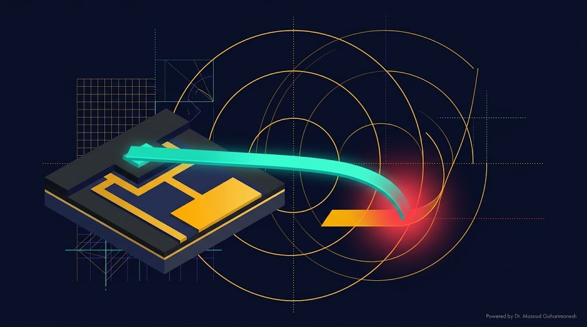
(Stability and Pull-in Instability) — جلسه ۱۲
دکتر مسعود گوهری منش
دانشیار گروه مهندسی مکانیک — دانشگاه تربت حیدریه
در مقیاس نانو، سیستمها بهسرعت از حالت پایدار خارج میشوند. درک **مرز پایداری** برای طراحی سنسورها، سوییچها و عملگرهای NEMS حیاتی است. بدون این تحلیل، ممکن است دستگاه شما در هنگام کار، بهطور ناگهانی از کار بیفتد.
در فیزیک و مهندسی، **پایداری** به توانایی سیستم برای بازگشت به حالت تعادل پس از یک اغتشاش کوچک گفته میشود.
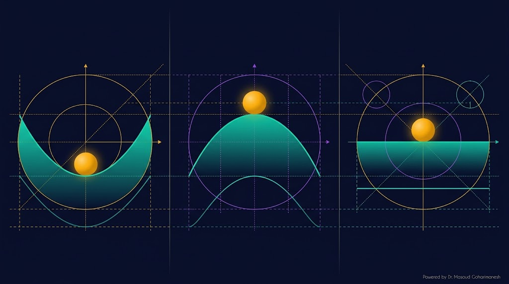
توپ در قعر دره. با یک ضربه کوچک، به قعر برمیگردد.
توپ روی قله. با یک ضربه کوچک، سقوط میکند.
توپ روی سطح صاف. با ضربه، جابجا میشود ولی برنمیگردد.
برای تحلیل پایداری، از **انرژی پتانسیل کل** سیستم استفاده میکنیم:
انرژی الاستیک تیر:
با $k_{eq} = 8EI/L^4$
انرژی خازن با فاصله متغیر:
علامت منفی بهدلیل جاذبه
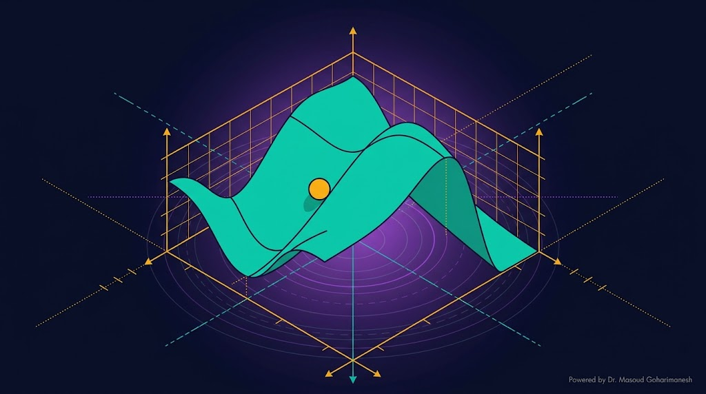
نقاط تعادل جایی هستند که نیروی کل صفر میشود (شیب انرژی صفر):
این معادله، تعادل بین **نیروی مکانیکی** (خطی) و **نیروی الکترواستاتیک** (غیرخطی) است:
برای پایدار بودن یک نقطه تعادل، باید کمینه انرژی باشد:
شرط پایداری:
ولتاژ را تغییر دهید و منحنی انرژی پتانسیل را ببینید.
**Bifurcation** یا انشعاب، لحظهای است که تعداد یا پایداری جوابهای سیستم بهطور کیفی تغییر میکند.
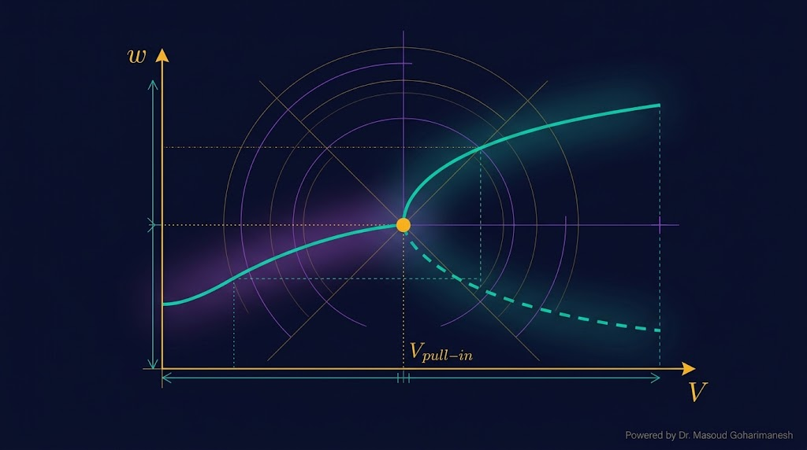
تا ولتاژ بحرانی، تیر در تعادل پایدار است. با افزایش ولتاژ، خمش بیشتر میشود.
پس از $V_{pull-in}$، جواب پایدار ناپدید میشود و تیر ناگهانی به بستر میچسبد.
با حل همزمان دو معادله (شرط تعادل و شرط پایداری)، ولتاژ بحرانی بهدست میآید:
با تقسیم دو معادله: $g - w = 2w$، یعنی $w_{pull-in} = g/3$
یا بهصورت صریح:
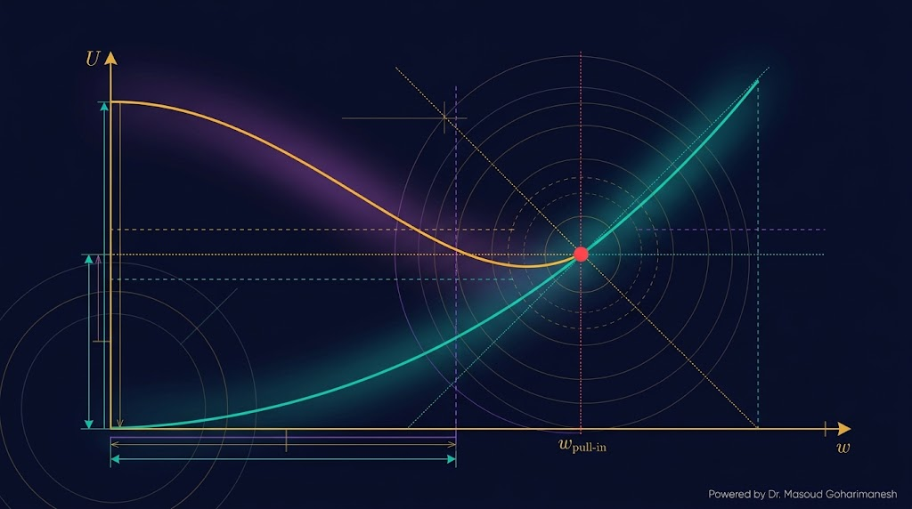
$dU/dw = 0$ و $d^2U/dw^2 = 0$ — دقیقترین روش برای مدل ساده.
$V_{pull-in} = \sqrt{\frac{8 k_{eq} g^3}{27 \epsilon_0 A}}$
تصویر معادله روی توابع پایه + حل عددی.
دقت بالاتر، پیچیدگی بیشتر
گسستهسازی کامل با اجزای محدود.
دقت بالا، نیاز به نرمافزار
ولتاژ را تغییر دهید و نقطه بحرانی را ببینید.
در حالت دینامیکی، معادله حرکت با **اینرسی و میرایی** نوشته میشود:
m = جرم معادل، c = ضریب میرایی
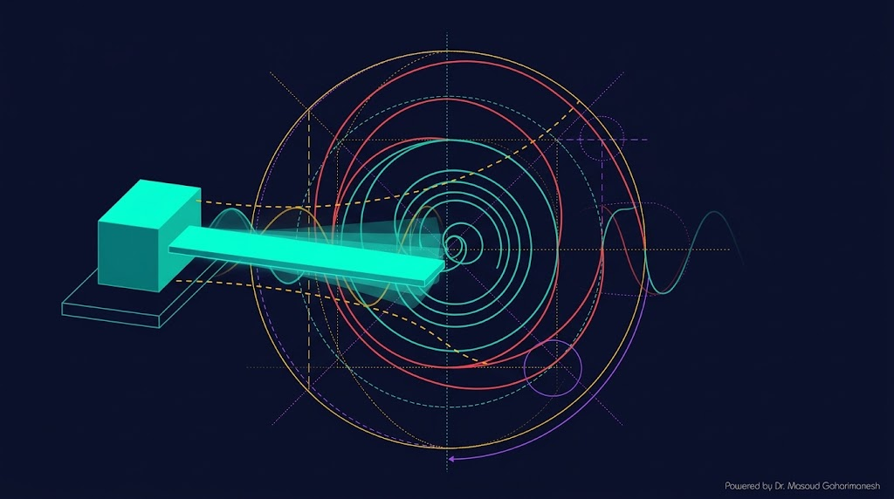
نوسان میرا با فرکانس طبیعی
سریعترین بازگشت بدون نوسان
بازگشت کند بدون نوسان
در مقیاس نانو، **نوسانات حرارتی** نقش مهمی در پایداری ایفا میکنند. دمای محیط، انرژی جنبشی تصادفی به سیستم وارد میکند.
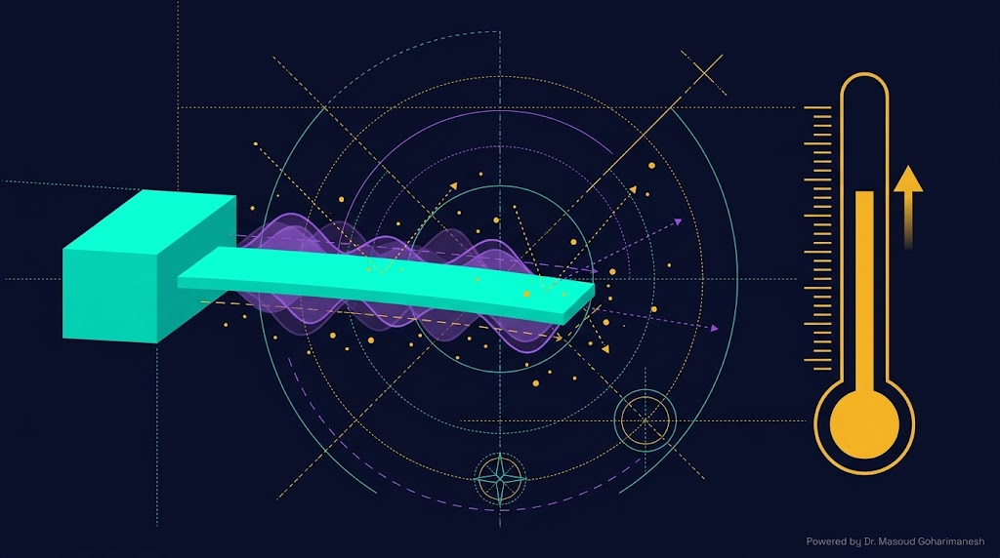
$k_B$ = ثابت بولتزمان، $T$ = دمای مطلق (K)
احتمال قرارگیری تیر در موقعیت w از **توزیع بولتزمان** تبعیت میکند:
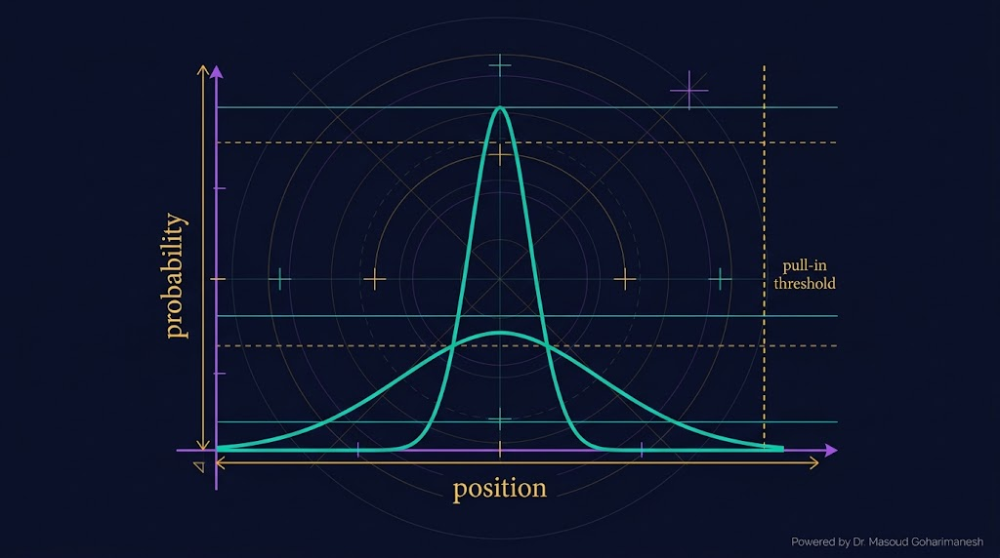
قله باریک اطراف کمینه انرژی — سیستم تقریباً قطعاً در حالت پایدار است.
قله پهن — احتمال قابل توجه برای رسیدن به ناحیه ناپایدار و Pull-in.
% === تحلیل پایداری و ولتاژ Pull-in === clear; clc; close all; % پارامترها L = 50e-6; % طول (m) b = 5e-6; % عرض (m) h = 0.5e-6; % ضخامت (m) g = 200e-9; % فاصله (m) E = 150e9; % مدول یانگ (Pa) eps0 = 8.854e-12; % گذردهی خلأ A = b * L; I = b*h^3/12; k_eq = 8*E*I/L^4; % === ولتاژ Pull-in === V_pullin = sqrt(8*k_eq*g^3 / (27*eps0*A)); fprintf('V_pull-in = %.4f V\n', V_pullin); % === خمش تعادلی برای ولتاژهای مختلف === V_vec = linspace(0, V_pullin*1.2, 100); w_vec = zeros(size(V_vec)); for i = 1:length(V_vec) V = V_vec(i); % حل معادله تعادل با fsolve eq = @(w) k_eq*w - eps0*A*V^2/(2*(g-w)^2); try w_eq = fzero(eq, g/4); if w_eq > 0 && w_eq < g w_vec(i) = w_eq; else w_vec(i) = NaN; end catch w_vec(i) = NaN; end end % === رسم نمودار bifurcation === figure('Color', 'w'); plot(V_vec, w_vec*1e9, 'b-', 'LineWidth', 2); hold on; plot([V_pullin V_pullin], [0 g*1e9], 'r--', 'LineWidth', 1.5); xlabel('V (V)'); ylabel('w (nm)'); title('نمودار Bifurcation نانو انبرک'); grid on;
# === تحلیل پایداری و ولتاژ Pull-in === import numpy as np import matplotlib.pyplot as plt from scipy.optimize import brentq # پارامترها L = 50e-6; b = 5e-6; h = 0.5e-6 g = 200e-9; E = 150e9; eps0 = 8.854e-12 A = b * L I = b * h**3 / 12 k_eq = 8 * E * I / L**4 # ولتاژ Pull-in V_pullin = np.sqrt(8 * k_eq * g**3 / (27 * eps0 * A)) print(f'V_pull-in = {V_pullin:.4f} V') # خمش تعادلی V_vec = np.linspace(0, V_pullin * 1.2, 100) w_vec = np.zeros_like(V_vec) for i, V in enumerate(V_vec): def eq(w): return k_eq * w - eps0 * A * V**2 / (2 * (g - w)**2) try: w_eq = brentq(eq, 1e-12, g * 0.99) w_vec[i] = w_eq except: w_vec[i] = np.nan plt.figure(figsize=(10, 6)) plt.plot(V_vec, w_vec * 1e9, 'b-', linewidth=2) plt.axvline(V_pullin, color='red', linestyle='--', label=f'V_pull-in = {V_pullin:.2f} V') plt.xlabel('V (V)'); plt.ylabel('w (nm)') plt.title('Bifurcation Diagram') plt.grid(True, alpha=0.3); plt.legend() plt.savefig('bifurcation.png', dpi=600, bbox_inches='tight') plt.show()
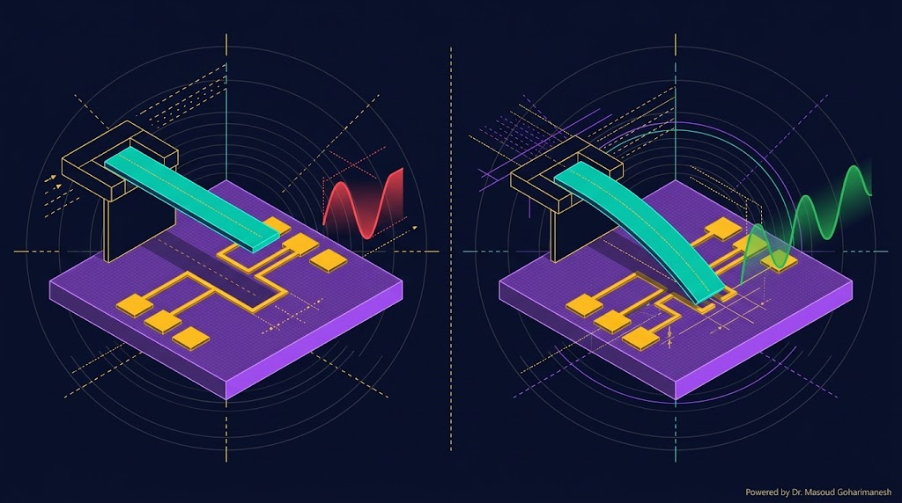
ولتاژ کمتر از Pull-in → تیر بالا → مدار باز → سیگنال RF مسدود.
ولتاژ بالاتر از Pull-in → تیر پایین → مدار بسته → سیگنال RF عبور.
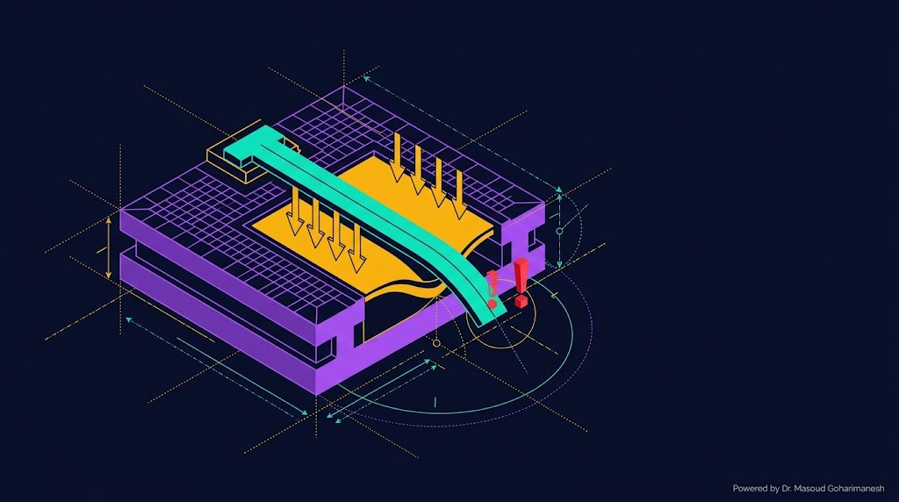
ارسال تمرینها:
m.goharimanesh@gmail.com
Subject الزامی:
[Advanced Engineering Mathematics] HW12 - نام و نام خانوادگی - شماره دانشجویی
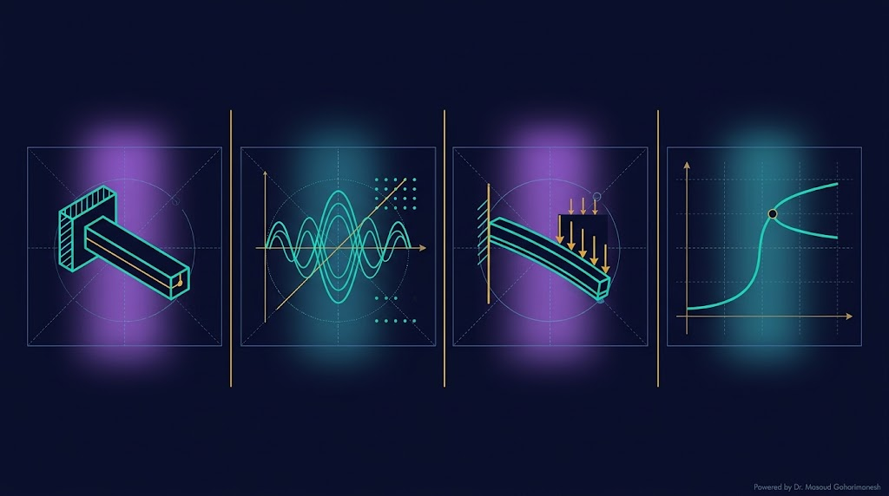
با نانو انبرک و پایداری آشنا شدید — حالا وقت حل است! 🌟
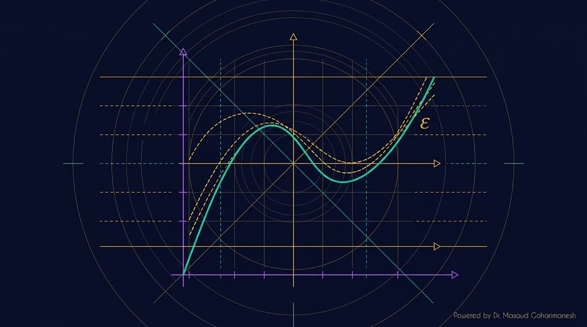
مقدمه Perturbation
دکتر مسعود گوهری منش
دانشیار گروه مهندسی مکانیک — دانشگاه تربت حیدریه
🇮🇷 با افتخار برای دانشجویان مکاترونیک 🇮🇷